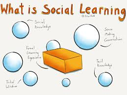

the meaning is:The frontal and temporal lobes handle much of our social activities. The limbic system (not shown apart from the hippocampus) also influences both the social and solitary styles. The limbic system has a lot to do with emotions, moods and aggression.
